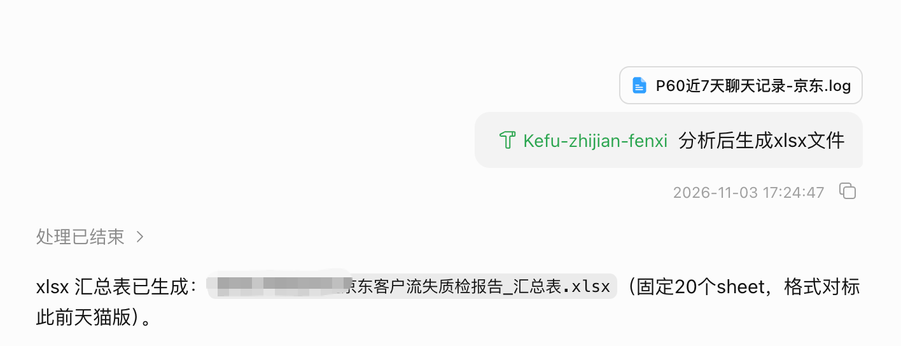
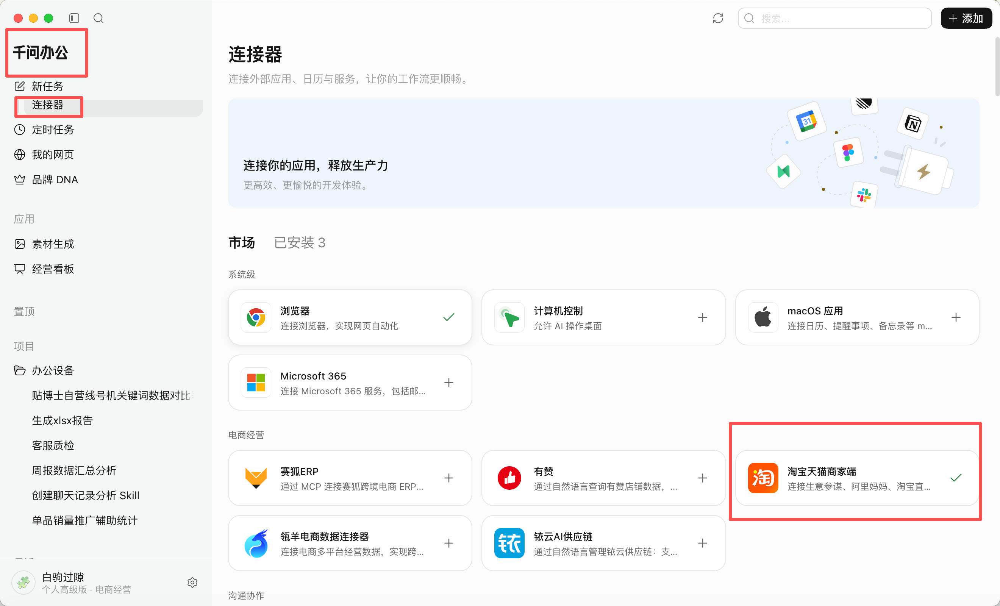
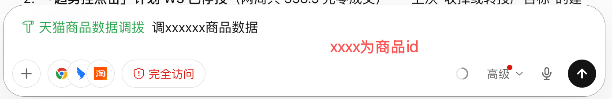
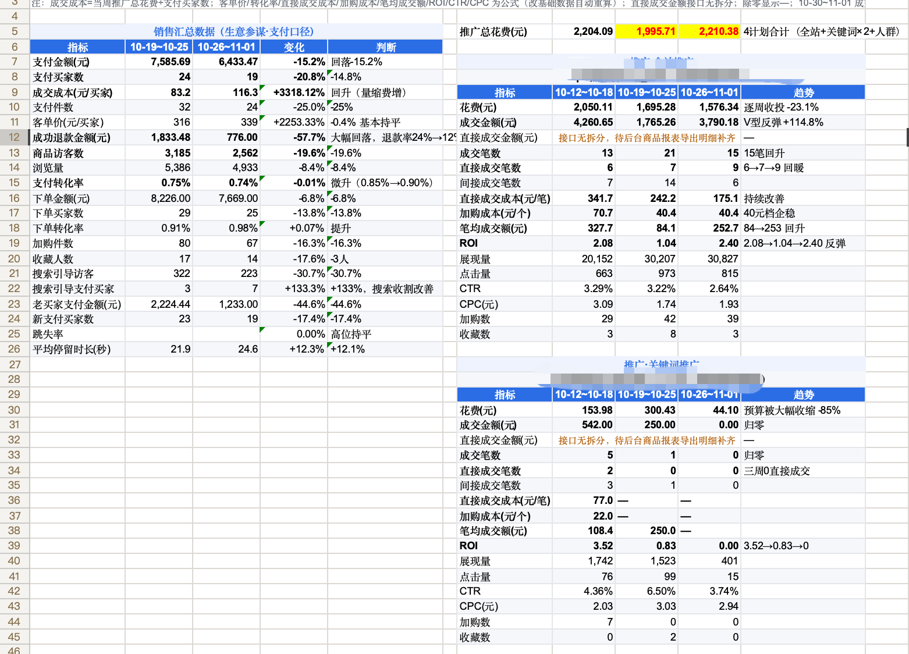

SKILL FILE
聊天记录分析及客服质检
下载该 skill 文件后，可导入支持该格式的工具或平台使用。
下载聊天记录分析及客服质检客服质检分析提示词演示

SKILL FILE
天猫商品数据调拨（周度对比）
使用前需在千问中通过淘宝连接器绑定店铺。该 skill 仅适用于淘系千牛店铺，可调取单品详细数据及该商品 ID 下的全部推广计划数据，并进行周度数据对比。
下载天猫商品数据调拨操作步骤及提示词演示
1. 在千问中绑定淘宝连接器

进入连接器页面，完成淘宝天猫商家端的店铺绑定。
2. 输入商品 ID 发起调拨

在提示词中填入需要查询的商品 ID。
3. 查看周度数据对比结果

结果会呈现单品经营数据与商品 ID 下推广计划的周度对比。